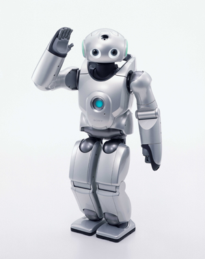

Add Media Query to your CSS
Pellentesque eleifend facilisis odio ac ullamcorper. Nullam ut enim ut massa tincidunt luctus. Ut nulla libero, eleifend vel ultrices at, volutpat quis quam. In eleifend velit bibendum sapien consectetur fermentum iaculis eu eros. Nullam eget dui eros, et semper justo. Nunc ut condimentum felis. Donec elementum euismod nisl vitae commodo. Morbi ac orci purus. Phasellus vehicula vulputate metus a fermentum. Fusce justo massa, pretium sed sollicitudin sit amet, mattis vitae ligula. Praesent venenatis viverra leo et convallis. Curabitur at mauris nec sapien malesuada sollicitudin. Nunc scelerisque dignissim augue aliquam interdum. Donec id aliquam augue. Proin commodo volutpat velit, vitae vulputate ipsum luctus vel. Aenean tincidunt iaculis tellus, sed egestas eros tincidunt et.